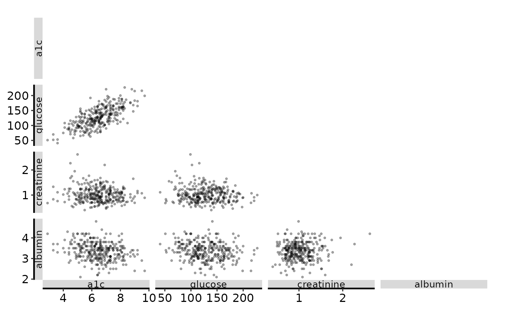
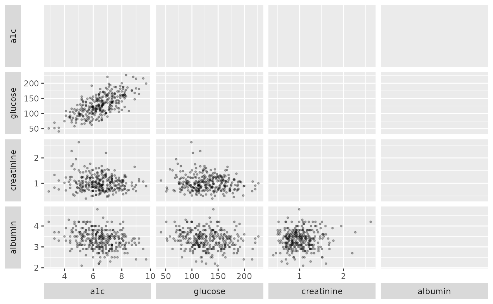

The scatter-plot-matrix analogue of SAS proc corr ... plots=matrix: one
scatter panel per unordered pair of vars, lower triangle only. It is the
plot half of the dc-tables job in the hvtiR job catalog. Call plot()
on the result for a bare ggplot; the coefficient table with Fisher
intervals is hvtiRtables::hv_correlation_table().
Usage
hv_correlation_matrix(
data,
vars,
labels = NULL,
method = c("pearson", "spearman")
)Value
An object of class c("hv_correlation_matrix", "hv_data"):
$data (columns col_var, row_var, x, y), $meta (vars,
labels, method, n_obs, which is nrow(data) before any pairwise
deletion, not a per-panel count), and $tables$coefficients, the
pairwise coefficient matrix.
Details
Rows missing either coordinate are dropped panel by panel (pairwise
deletion, as proc corr does), so a variable with missing values thins
only the panels it appears in.
A single warning() names variables with fewer than 3 non-missing values or
no variation, and otherwise-usable pairs with fewer than 3 pairwise-complete
observations. These panels are sparse or flat, so their coefficients may be
unstable or NA.
At large sizes (about 73 MB at 17 variables by 11,000 rows), write a raster
format such as PNG rather than PDF, since every point is a vector object in
a PDF, and lower alpha so overplotted panels stay legible.
Examples
d <- sample_correlation_data()
cm <- hv_correlation_matrix(d, c("a1c", "glucose", "creatinine", "albumin"))
plot(cm) + theme_hv_manuscript()

# strip.placement moves the variable names outside the axis
plot(cm) + ggplot2::theme(strip.placement = "outside")
